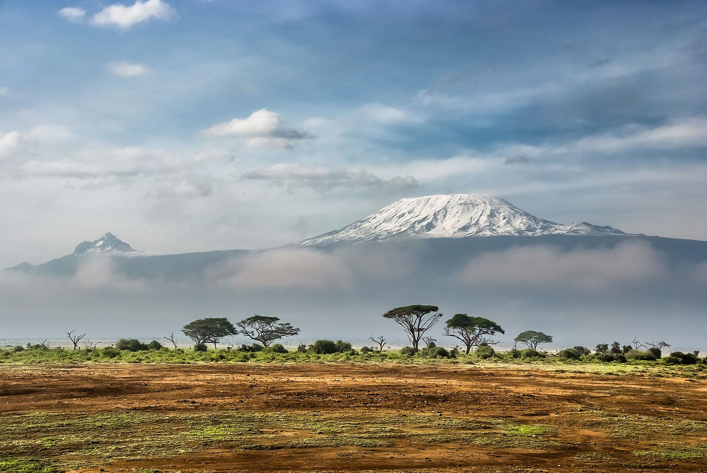

Kiliminjaro
Mount Kilimanjaro (/ˌkɪlɪmənˈdʒɑːroʊ/) is a dormant volcano in Tanzania. It is the highest mountain in Africa and one of the highest free-standing mountain above sea level in the world, at 5,895 m (19,341 ft) above sea level and 4,900 m (16,100 ft) above its plateau base. It is also the highest volcano in the Eastern Hemisphere and the fourth most topographically prominent peak on Earth.
Kilimanjaro's southern and eastern slopes served as the home of the Chagga Kingdoms until their abolition in 1963 by Julius Nyerere. The origin and meaning of the name Kilimanjaro is unknown, but may mean "mountain of greatness" or "unclimbable". Although described in classical sources, German missionary Johannes Rebmann is credited as the first European to report the mountain's existence, in 1848. After several European attempts, Hans Meyer reached Kilimanjaro's highest summit in 1889.
The mountain was incorporated into Kilimanjaro National Park in 1973. As one of the Seven Summits, Kilimanjaro is a major hiking and climbing destination. There are seven established routes to Uhuru Peak, the mountain's highest point. Although not as technically challenging as similar mountains, the prominence of Kilimanjaro poses a serious risk of altitude sickness.
